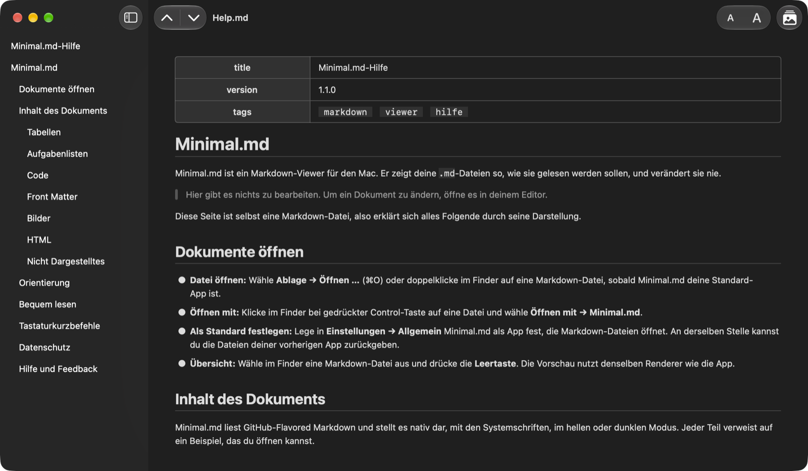

Markdown-Viewer & Übersicht
Öffne eine Markdown-Datei und lies sie einfach.
Minimal.md öffnet die .md-Dateien, die du und deine KI-Agenten schreiben, und zeigt sie so, wie sie gelesen werden sollen – und verändert sie nie.

Funktionen
Kein Editor, keine Synchronisierung, kein Account.
Das Dokument nativ mit den Systemschriften dargestellt, im hellen oder dunklen Modus.
Lesen, nicht bearbeiten
Minimal.md schreibt nie in deine Dateien. Öffne Markdown aus dem Finder oder über „Öffnen mit“, oder mach Minimal.md in Einstellungen → Allgemein zu deiner Standard-App für Markdown.
Arbeite mit deinen KI-Agenten
Folgt der Datei live, während der Agent sie schreibt.
Nie im Konflikt mit einem Agenten, der dieselbe Datei bearbeitet.
Übersicht
Wähle im Finder eine Markdown-Datei aus und drücke die Leertaste, um sie dargestellt zu lesen, ohne die App zu öffnen.
Privat von Grund auf
Keine Netzwerkverbindungen, keine erfassten Daten, und Bilder aus dem Internet werden nie geladen. Die App liest nur die Dateien, die du öffnest, und die Ordner, die du freigibst.
Bildschirmfotos
Ein genauerer Blick.
Lesen
Zum Lesen gemacht.
Natives macOS, mit den Tastaturkurzbefehlen, die du erwartest.
Inhaltsverzeichnis
Die Seitenleiste listet die Überschriften des Dokuments.
Klicke auf eine, um dorthin zu springen.
⌃⌘S
Überschrift für Überschrift
Springe mit den Pfeilen in der Symbolleiste zur vorherigen oder nächsten Überschrift.
Springe zum Anfang oder Ende des Dokuments.
⌘↑ ⌘↓ ⌥⌘↑ ⌥⌘↓
Links, die funktionieren
Ein Link zu einer Überschrift scrollt dorthin.
Ein Link zu einer anderen Markdown-Datei öffnet sie.
Weblinks öffnen sich in deinem Browser.
Komfort
Vergrößere oder verkleinere den Text in der Symbolleiste – alle Fenster und die Übersicht folgen.
Hell oder dunkel: Minimal.md folgt dem Erscheinungsbild deines Mac.
⌘+ ⌘− ⌘0
Bilder
Bilder neben deinem Dokument erscheinen an ihrer Stelle.
Bilder aus dem Internet werden nie geladen: Du siehst einen Platzhalter mit der Bildbeschreibung statt einer Lücke.
⌥⌘L
Kontext
Wähle Text aus für alles, was macOS bietet: „Nachschlagen“, „Übersetzen“, Schreibtools und Dienste.
Du brauchst den ganzen Text? Bearbeiten → Dokument als Markdown kopieren kopiert den gesamten Quelltext.
⇧⌘C
App Store-Angaben
Datenschutz und Bedienungshilfen.
Unterstützte Funktionen auf dem Mac
- VoiceOver
- Sprachsteuerung
- Dunkle Benutzeroberfläche
- Nicht nur durch Farben differenzieren
- Ausreichender Kontrast
- Reduzierte Bewegung
Sprachen
- Englisch
- Französisch
- Deutsch
- Italienisch
- Russisch
- Spanisch
Du möchtest Minimal.md in deiner Sprache? Sag uns Bescheid.
Neuigkeiten
Was sich in jeder Version geändert hat, steht im Änderungsprotokoll (auf Englisch).
Öffentliche Beta
Neue Builds früher? Mach bei der Beta mit (auf Englisch).